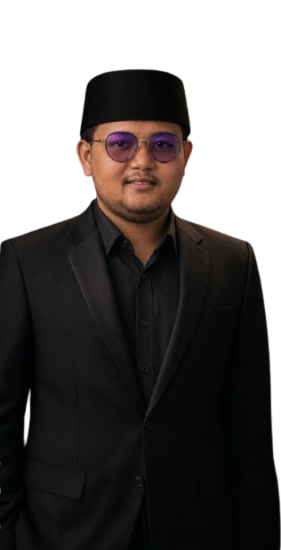

Saya memiliki pengalaman di bidang kreatif digital dengan fokus pada desain modern, branding visual, dan pemanfaatan teknologi AI dalam proses kreatif. Saya lebih memahami dunia desain visual, mulai dari membuat tampilan yang modern, estetik, dan profesional untuk kebutuhan personal branding maupun bisnis. Selain desain, saya juga memiliki pengetahuan dasar tentang pengembangan website dan beberapa bahasa pemrograman. Meskipun belum terlalu mendalami dunia website secara teknis, saya memahami konsep dasar serta alur pembuatannya. Saya juga cukup memahami penggunaan AI untuk membantu proses kreatif, pembuatan konten visual, eksplorasi ide, hingga meningkatkan efisiensi dalam pekerjaan digital. Dengan perpaduan kreativitas, pemahaman desain, dan teknologi AI, saya terus belajar dan mengembangkan kemampuan untuk menciptakan karya digital yang menarik, modern, dan memiliki identitas visual yang kuat.

Saya memiliki ketertarikan dalam dunia desain grafis, pembuatan logo, UI modern, poster digital, serta pengembangan website responsive. Saya menyukai proses menciptakan tampilan visual yang modern, menarik, dan memiliki identitas yang kuat untuk berbagai kebutuhan personal maupun bisnis. Fokus utama saya berada pada desain visual dan eksplorasi kreativitas digital, terutama dalam membuat desain yang estetik, profesional, dan mengikuti tren modern. Selain itu, saya juga tertarik mempelajari teknologi AI dan beberapa dasar bahasa pemrograman untuk membantu proses kreatif serta meningkatkan efisiensi dalam pembuatan karya digital. Saya terus mengembangkan kemampuan dan wawasan di bidang kreatif digital agar dapat menghasilkan karya yang tidak hanya menarik secara visual, tetapi juga memiliki fungsi dan pengalaman pengguna yang baik.
Membuat website modern, responsive, dan nyaman digunakan.
Membuat logo, flyer, dan poster digital dengan desain modern.
Mendesain tampilan yang elegan, modern, dan mudah digunakan.
Website modern dengan tampilan profesional dan premium.
Desain identitas visual untuk komunitas, brand, dan organisasi.
Desain poster dan media promosi digital dengan konsep modern.
📧 Email : rachmad080802@gmail.com
📱 WhatsApp : 081939355484
📸 Instagram : @rachmad_hidayat.08